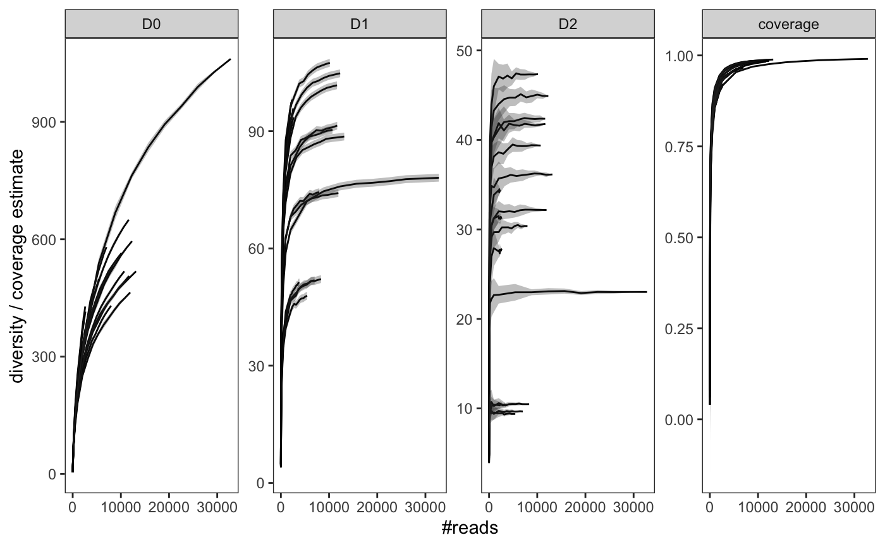
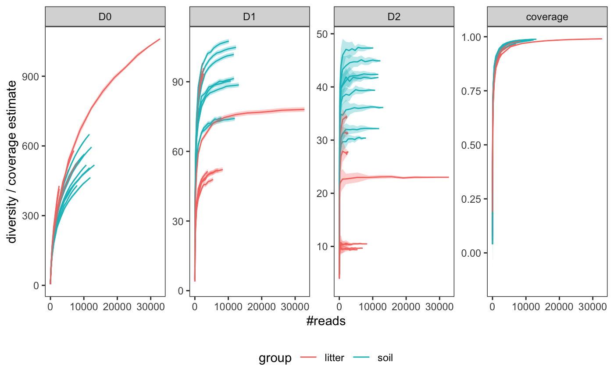
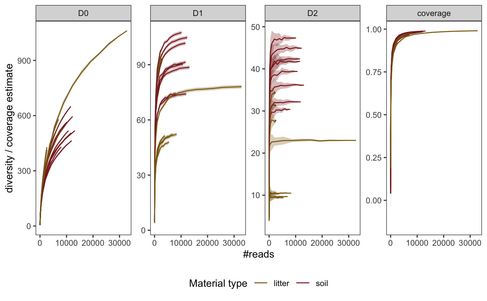

These functions generate and plot rarefaction curves from a metabarlist object using the hill numbers framework (i.e. \(^{q}D\)), as well as Good's coverage index.
hill_rarefaction(metabarlist, nboot = 10, nsteps = 10) gghill_rarefaction(hill_rar, group = NULL)
| metabarlist | a |
|---|---|
| nboot | the number of resampling events to estimate \(^{q}D\) at a given sequencing depth. |
| nsteps | the number of steps between sample sizes for the rarefaction curves. Default is 10 steps. |
| hill_rar | an object of class |
| group | a vector or factor giving the grouping of each pcr included in the
|
The hill_rarefaction function returns an object of class "hill_rarefaction",
which corresponds to a table of diversity indices for each pcr rarefied at each `nsteps`
sequencing depth, as well as the arguments `nboot` and `nsteps` to conduct the analysis.
hill_rarefaction builds a rarefaction analysis for each PCR of a metabarlist object using Hill numbers for q=0,1,2 (see Chao et al. 2014 for a review). These indices are equivalent to :
Richness, for q=0
Exponential of the Shannon entropy, for q->1
Inverse of the Simpson index, for q=2
The function also returns Good's coverage index (1-singletons/#reads). Note however that this index should be interpreted carefully in metabarcoding data: #'
absolute singletons (across the whole metabarcoding dataset) are usually filtered out during bioinformatic process (which is the case for the soil_euk data). The Good's coverage estimate returned here is only based on the number of singletons per PCR after this filtering process, so the true number of singletons is underestimated here.
This coverage index gives an assessment of the coverage of the amplicon diversity within a pcr: it includes remaining errors, etc.. The coverage of the genuine DNA fragment diversity in the biological sample is likely to be misestimated with this index.
hill_rarefaction: Compute hill_rarefaction curves on a metabarlist object.
gghill_rarefaction: Plot a object of class "hill_rarefaction"
Chao, A., Chiu, C. H., & Jost, L. (2014). Unifying species diversity, phylogenetic diversity, functional diversity, and related similarity and differentiation measures through Hill numbers. Annual review of ecology, evolution, and systematics, 45, 297-324.
data(soil_euk) library(ggplot2) # Create a subset of pcrs: only a subset of samples from the H20 plot soil_euk_h20 <- subset_metabarlist(soil_euk, table = "pcrs", indices = grepl("H20-[A-B]", rownames(soil_euk$pcrs))) # run rarefaction (use boot = 20 to limit computation time) soil_euk_h20.raref <- hill_rarefaction(soil_euk_h20, nboot = 20, nsteps = 10) # plot the results gghill_rarefaction(soil_euk_h20.raref)# plot the results while differenciating litter vs. soil samples p <- gghill_rarefaction( soil_euk_h20.raref, group = soil_euk_h20$samples$Material[match(soil_euk_h20$pcrs$sample_id, rownames(soil_euk_h20$samples))]) pp + scale_fill_manual(values = c("goldenrod4", "brown4", "grey")) + scale_color_manual(values = c("goldenrod4", "brown4", "grey")) + labs(color = "Material type")